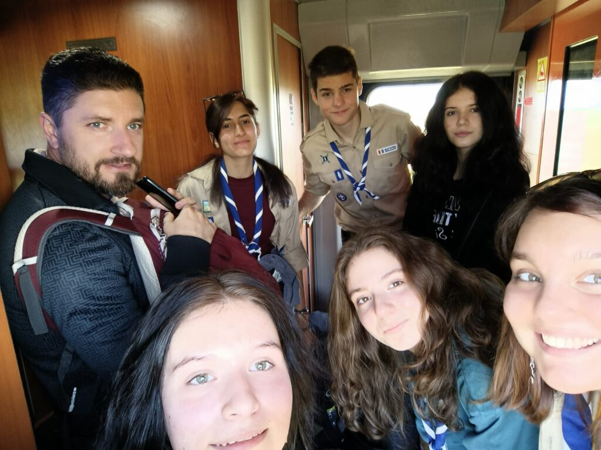
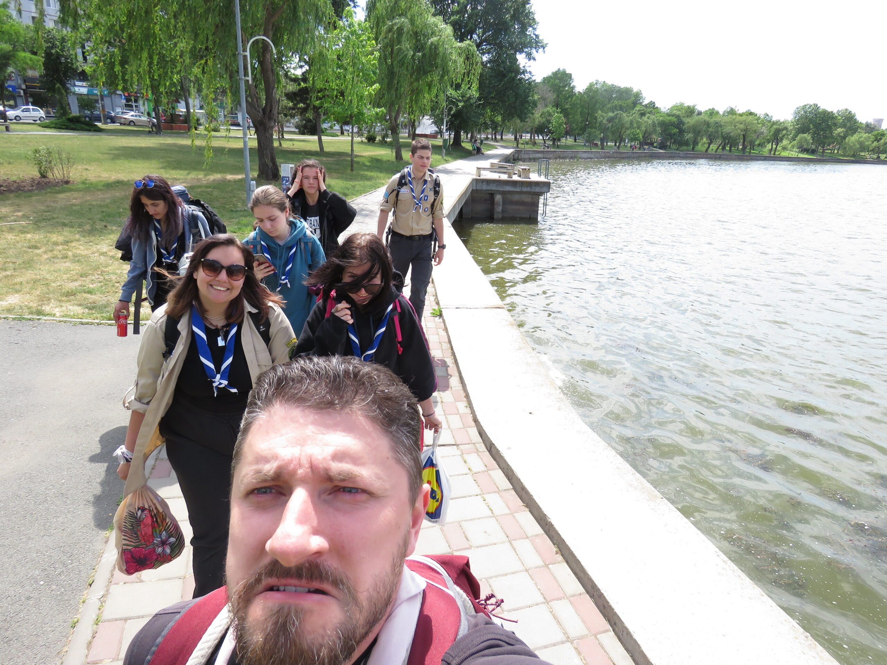

Hike de primăvară la Sulina — Jurnal #5


Hey how, let’s go….!
Iată că scriu astăzi și despre experiența din al 2-lea hike de primăvară. Cu bune, cu mai puțin bune, la mare, la soare, pe ploaie și multe altele de povestit…!
Vineri dimineață, plecarea s-a făcut la ora 7:20, întâlnind prima peripeție. Biletele nu erau luate, de fapt erau în proces de a fi luate, iar trenul era pe punctul de plecare, eu și alții 4 colegii eXploratori stăteam cu sufletul la gură pe holul dintre primul și al doilea vagon, așteptând apelul de la Carla ce avea să sune astfel : “Am urcat, avem și biletele!” După confirmarea mult așteptată, ne-am așezat bagajele, ne-am așezat și noi (pe bagaje) și ne-am povestit emoțiile, impresiile și puteam spune că, acum, eram “Gata, Oricând!” de următoarele aventuri la Sulina.
După ce am schimbat trenurile, am mai povestit, am organizat și ne-am bucurat de compania unul altuia, am ajuns în final pe vapor. Aici aveam să intrăm în lumea piraților, fiecare a căpătat propriul nume, rol și sarcini de îndeplinit. Astfel am dat startul la activități.
Prima activitate a fost chiar programul meu. Cu un feedback pe măsură, a fost o experiență frumoasă din care sper că ne vom aminti cu drag. Evident, nu am lăsat niciun moment să treacă fără să-l imortalizăm cu poze.
Ajunși în Sulina, ne-am despachetat, ne-am tras sufletul și am luat cina și am continuat cu un program de seară organizat de Adi și de Teo, în care ne-am provocat la a ne cunoaște pe noi între noi și pe sine, mai mult, am vorbit despre prietenie. După aceste activității frumoase și cu o importanță aparte, am tras corabia pe dreaptă, așezându-ne la un bine meritat somn.
Sâmbătă dimineață, înviorarea a fost susținută de Andi, împreună cu un moment spiritual ce ne-a oferit starea de bine și energia, pentru următoarea aventură care avea să fie hike-ul propriu-zis.
Am început prin a vizita “Castelul de Apă” al Sulinei, un muzeu cu piese de colecție al unui localnic, apoi piciorul ne-a plimbat până la Plaja Sulina, unde apa și briza ne-au călăuzit drumul către cel mai estic punct al României. Până la destinație, am luat prânzul, am râs, am descoperit tainele unei plaje prea puțin populată și ne-am bucurat de sunetul valurilor, acompaniați de discuții sau de sine.
Scopul nostru a fost atins, am ajuns în cel mai estic punct, unde priveliștea fura câte un zâmbet sincer și multe momente prinse în poze de album. Drumul de întoarcere s-a petrecut ca și cel de venire, cu mica îndeplinire a următorului obiectiv și anume îngroparea comorii pentru a fi mai târziu descoperită de temerari.

Înapoi la locul de ședere, ne-am odihnit, lăsând amintirile să se printeze în suflet, am mâncat și a urmat programul din a 2-a seară, care avea să fie și ultima.
Programul de seară s-a desfășurat astfel : fiecare dintre noi putea propune un subiect de discuție din care aveam toți ceva de învățat și împărtășit, oprindu-ne numai când unul dintre noi considera că este cazul de o altă discuție. Astfel pe acest tip de program, nou aplicat la în patrulă, am trecut prin subiecte ca overthinking-ul, iubirea, atașamentul, prietenia și responsabilitățile, toate având un impact puternic și niște lecții noi de notat.
La sfârșitul acestuia, ne-am urat un somn plăcut, ne-am făcut bagajele și ne-am odihnit pentru ziua întoarcerii la corabia mamă, Bucureștiul.
Astfel ziua întoarcerii ne-a surprins pe vapor cu somn, discuții și odihnă sufletească. În schimb aventurile nu se terminaseră. Programul Dariei Brunete avea să încheie ciclul activităților prin mai multe jcouri de coordonare, atenție și colaborare care ne-au conturat o imagine a lucrului în echipă.
În final, a urmat trenul de întorcere, unde s-a râs, s-a dormit, s-a vorbit și s-a ajuns în București cu un suflet plin de lecții, zâmbete și bucurii.
P.S. Pe facebook aveți albumul de poze comple !